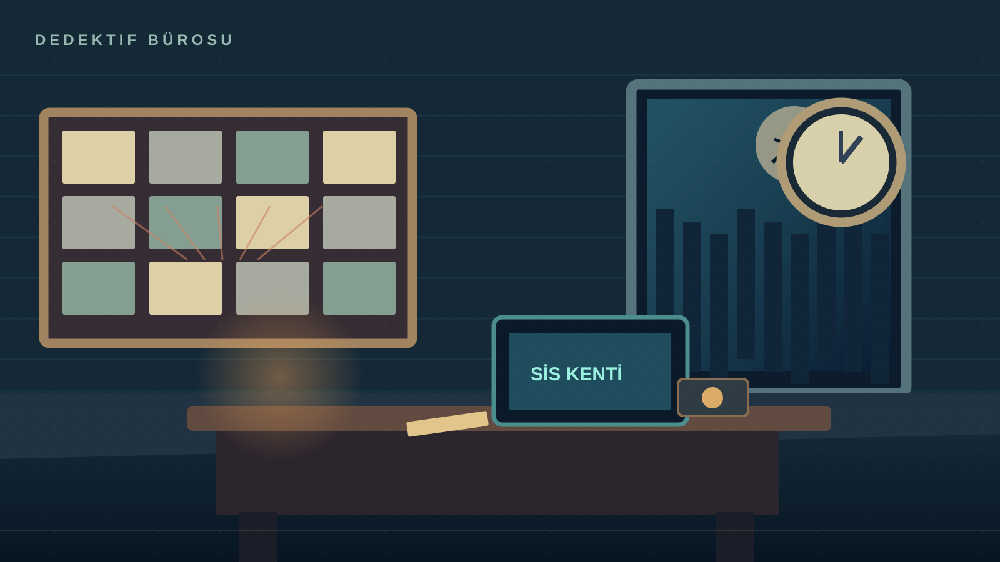

FERN PLAY · DOSYA 003
FERN DETECTIVE
◈
Harita
▤
Dosya
⚙
BÖLÜM 01 · SİS KENTİ VAKASI
Kayıp
Sinyal
Bir şehir. Sekiz mekân. Kaynağı bulunamayan bir duyuru.
● SORUŞTURMA AÇIK
◈ Şehir haritası
▤ Kanıt defteri

● ETKİLEŞİMLİ SAHNE
◎ Nesneleri göster
✧ İpucu al
⬡ Bulmacayı aç
A
ADA · TELSİZ BAĞLANTISI